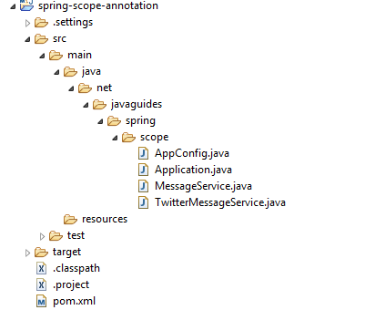

In this article, we will discuss how to use the @Scope annotation with Prototype scope in a Spring Boot application.
The @Scope annotation is used to define the scope of a @Component class or a
@Bean definition. The @Scope
annotation can be used with all Spring bean scopes:
In this article, we will discuss how to use the @Scope annotation with Prototype scope with an
example.
When a Spring bean is scoped as a prototype, the Spring IoC container creates a new bean instance every time
a request is made for that bean. We can define the scope of a bean as a prototype using the @Scope(value =
ConfigurableBeanFactory.SCOPE_PROTOTYPE) annotation.
We will demonstrate this example using annotation-based (@Component) as well as Java-based
configuration
(@Bean).
Let's create an example to demonstrate the usage of @Scope annotation with a prototype scope in
a Spring application.
Create a simple Maven project using your favourite IDE. Below is the project structure for your reference:
Make sure to use Java 17 or later for Spring Framework 6:
<project xmlns="http://maven.apache.org/POM/4.0.0"
xmlns:xsi="http://www.w3.org/2001/XMLSchema-instance"
xsi:schemaLocation="http://maven.apache.org/POM/4.0.0 http://maven.apache.org/xsd/maven-4.0.0.xsd">
<modelVersion>4.0.0
<groupId>org.example
<artifactId>learn-spring-framework
<version>1.0-SNAPSHOT
<properties>
<maven.compiler.source>17
<maven.compiler.target>17
</properties>
<dependencies>
<dependency>
<groupId>org.springframework
<artifactId>spring-core
<version>6.0.6
</dependency>
<dependency>
<groupId>org.springframework
<artifactId>spring-context
<version>6.0.6
</dependency>
</dependencies>
</project>
MessageService Interface
package net.javaguides.spring.scope;
public interface MessageService {
String getMessage();
void setMessage(String message);
}
This interface defines two methods: getMessage() and setMessage(String message).
Any class that implements
this interface will need to provide implementations for these methods.
TwitterMessageService Class
package net.javaguides.spring.scope;
import org.springframework.beans.factory.config.ConfigurableBeanFactory;
import org.springframework.context.annotation.Scope;
import org.springframework.stereotype.Component;
@Component
@Scope(value = ConfigurableBeanFactory.SCOPE_PROTOTYPE)
public class TwitterMessageService implements MessageService {
private String message;
@Override
public String getMessage() {
return message;
}
@Override
public void setMessage(String message) {
this.message = message;
}
}
In this class:
@Component annotation tells Spring that this class is a Spring component.@Scope(value = ConfigurableBeanFactory.SCOPE_PROTOTYPE)annotation specifies that this bean
should be scoped as a prototype.getMessage() returns the current message.setMessage(String message) sets the current message.AppConfig Class
package net.javaguides.spring.scope;
import org.springframework.context.annotation.ComponentScan;
import org.springframework.context.annotation.Configuration;
@Configuration
@ComponentScan(basePackages = "net.javaguides.spring")
public class AppConfig {
}
In this class:
@Configuration indicates that this class contains Spring bean definitions.@ComponentScan(basePackages = "net.javaguides.spring") tells Spring to scan the specified
package for components (i.e., classes annotated with @Component).Application Class
package net.javaguides.spring.scope;
import org.springframework.context.annotation.AnnotationConfigApplicationContext;
public class Application {
public static void main(String[] args) {
AnnotationConfigApplicationContext context = new AnnotationConfigApplicationContext(AppConfig.class);
MessageService messageService = context.getBean(MessageService.class);
messageService.setMessage("TwitterMessageService Implementation");
System.out.println(messageService.getMessage());
MessageService messageService1 = context.getBean(MessageService.class);
System.out.println(messageService1.getMessage());
context.close();
}
}
In this class:
AnnotationConfigApplicationContext is used to create and manage the Spring application
context.context.getBean(MessageService.class) retrieves a bean of type MessageService
from the Spring context.messageService) sets and prints a message.messageService1) retrieves and prints the message.
TwitterMessageService Implementation
null
Explanation:
messageService) sets the message to "TwitterMessageService Implementation"
and prints it.messageService1) is a new instance (because of the prototype scope) and
has no message set, so it prints null.MessageService Interface
package net.javaguides.spring.scope;
public interface MessageService {
String getMessage();
void setMessage(String message);
}
This interface remains the same as in the previous example.
TwitterMessageService Class
package net.javaguides.spring.scope;
public class TwitterMessageService implements MessageService {
private String message;
@Override
public String getMessage() {
return message;
}
@Override
public void setMessage(String message) {
this.message = message;
}
}
This class remains the same, but without @Component and @Scope annotations since we
will configure it using Java-based configuration.
AppConfig Class
package net.javaguides.spring.scope;
import org.springframework.beans.factory.config.ConfigurableBeanFactory;
import org.springframework.context.annotation.Bean;
import org.springframework.context.annotation.Configuration;
import org.springframework.context.annotation.Scope;
@Configuration
public class AppConfig {
@Bean
@Scope(value = ConfigurableBeanFactory.SCOPE_PROTOTYPE)
public MessageService messageService() {
return new TwitterMessageService();
}
}
In this class:
@Bean annotation tells Spring that this method returns a Spring bean.@Scope(value = ConfigurableBeanFactory.SCOPE_PROTOTYPE) specifies that this bean should be
scoped as a prototype.Application Class
package net.javaguides.spring.scope;
import org.springframework.context.annotation.AnnotationConfigApplicationContext;
public class Application {
public static void main(String[] args) {
AnnotationConfigApplicationContext context = new AnnotationConfigApplicationContext(AppConfig.class);
MessageService messageService = context.getBean(MessageService.class);
messageService.setMessage("TwitterMessageService Implementation");
System.out.println(messageService.getMessage());
MessageService messageService1 = context.getBean(MessageService.class);
System.out.println(messageService1.getMessage());
context.close();
}
}
This class remains the same as in the previous example.
TwitterMessageService Implementation
null
Explanation:
messageService) sets the message to "TwitterMessageService Implementation"
and prints it.messageService1) is a new instance (because of the prototype scope) and
has no message set, so it prints null.In this article, we demonstrated how to use the @Scope annotation with Prototype scope in
Spring Boot applications. Using the prototype scope, we ensure that a new instance of the bean is created each time it is requested. This is particularly useful for beans that are stateful and need to be re-instantiated with every use.